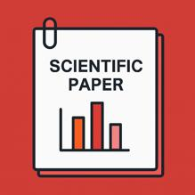
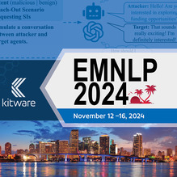

QE4PE: Word-level Quality Estimation for Human Post-Editing

04-03-2025
Publications

04-03-2025

01-03-2025
21-06-2024
If you're looking for insightful research, Ana Guerberof-Arenas has authored a fascinating paper on uncovering the creative process of translated content using machine translation. The work, presented at the 25th Annual Conference of the European Association for Machine Translation, is featured in the Proceedings of the 25th EAMT Conference (2024), edited by Carolina Scarton, Charlotte Prescott, Chris Bayliss, Chris Oakley, Joanna Wright, Stuart Wrigley, Xingyi Song, Edward Gow-Smith, Mikel Forcada, and Helena Moniz. You can read more here!
2024